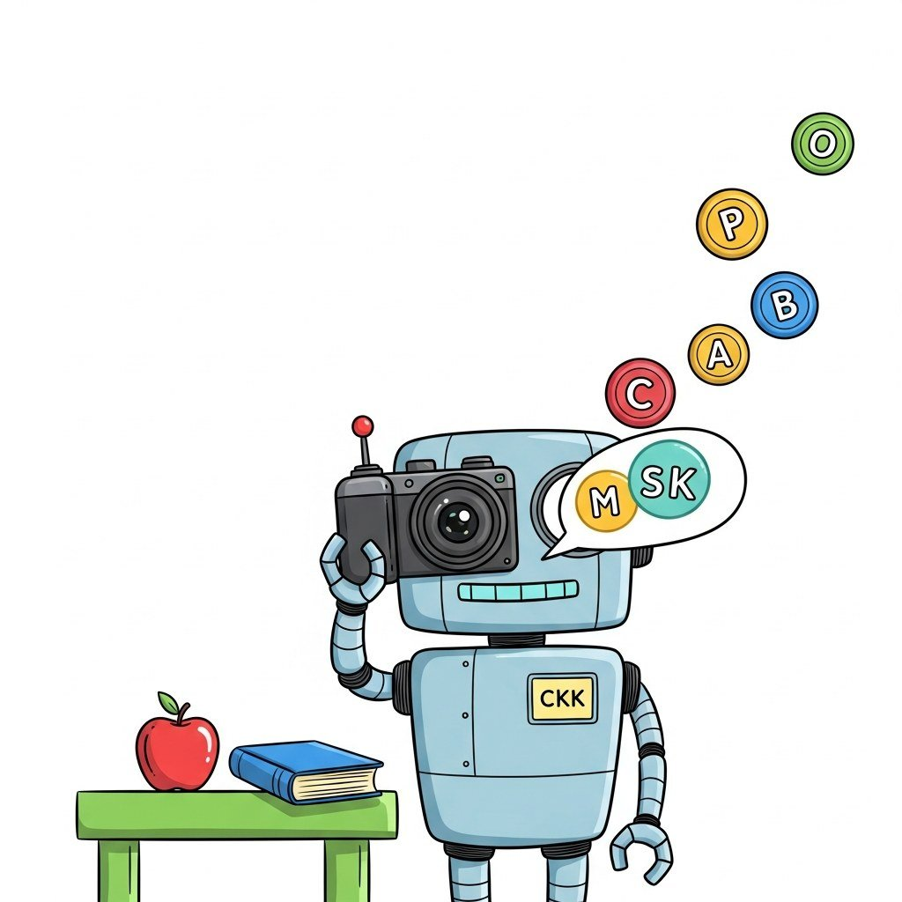

Big Picture
How LLMs see. The first half covers vision-language models (ViT, CLIP/SigLIP contrastive learning, generative VLMs like LLaVA and Qwen-VL, frontier VLMs GPT-4V/Gemini/Claude Vision, multimodal benchmarks). The second half covers omni models (pipeline vs native multimodal, early vs late fusion, any-to-any generation, GPT-4o/Gemini/Llama-4-Omni/Chameleon).
Sections
- 22.1 ViT and Visual Tokenization Modern Vision-Language Models are stitched together from two halves: a vision encoder that turns pixels into a sequence of vectors, and a language model that consumes those vectors as if they were... Entry
- 22.2 Contrastive Vision-Language: CLIP and SigLIP CLIP was the model that taught a vision encoder to speak. Entry
- 22.3 Generative VLMs: LLaVA, BLIP-3, Qwen-VL A generative Vision-Language Model takes an image plus a text prompt and produces text. Intermediate
- 22.4 Frontier VLMs: GPT-4V, Gemini, Claude Vision Closed-source frontier VLMs (OpenAI GPT-4V/4o, Google Gemini 1.5/2.0, Anthropic Claude 3.5/3.7 Vision) sit at the top of every public multimodal benchmark. Advanced
- 22.5 Evaluating Multimodal Reasoning: MMMU and Saturation Benchmarks define what the field optimizes for. Intermediate
- 22.6 Pipeline vs Native Multimodal Multimodal AI systems fall on a spectrum from "pipeline" to "native". Intermediate
- 22.7 Early Fusion vs Late Fusion Once you commit to a native multimodal architecture (see Section 37.1), the next question is where in the network the modalities combine. Intermediate
- 22.8 Any-to-Any Generation "Any-to-any" generation is the goal of a single model that can consume any modality and produce any modality. Advanced
- 22.9 Frontier Omni Models: GPT-4o, Gemini, Llama-4-Omni, Chameleon Four frontier omni models defined the 2024-2026 state of native multimodality. Advanced
What's Next?
This chapter begins with Section 22.1: ViT and Visual Tokenization. Each section builds on the previous one, so we recommend reading them in order.